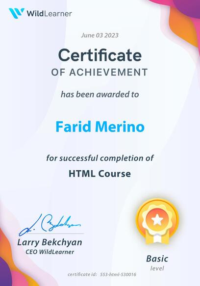
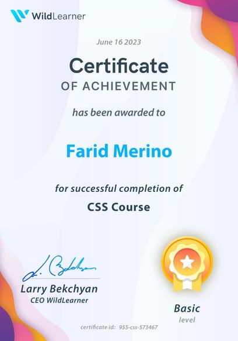
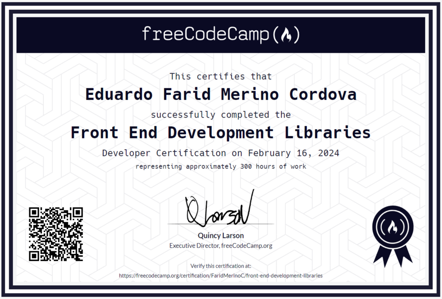
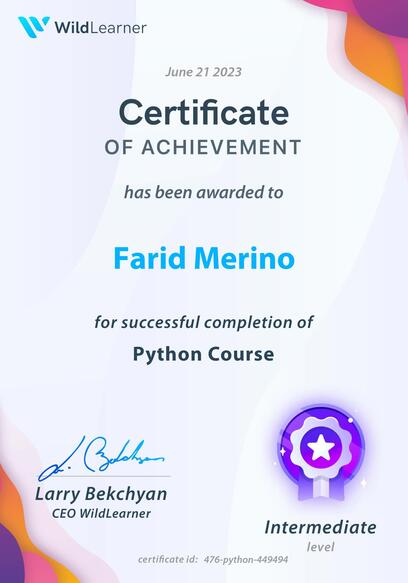
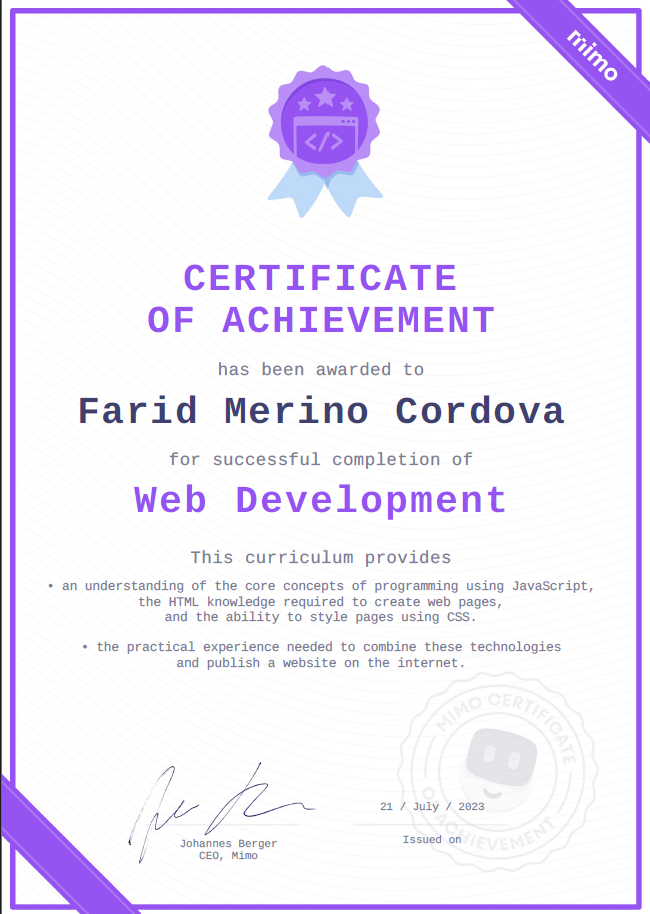
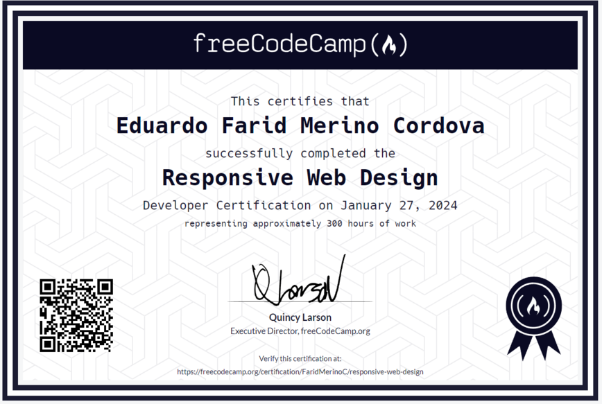

<!-- <div class="flex justify-center items-center h-full w-full overflow-hidden font-serif">
    <div class="rounded-md p-1 w-4/6 mx-auto my-auto">
      <div class="w-4/6 mx-auto my-auto">
        <div class="flex justify-end mb-3">
          <button class="bg-blue-500 hover:bg-blue-700 text-white font-bold py-2 px-4 rounded my-auto">
            <a href="../../../assets/CV-EDUARDO-MERINO-2024.pdf" download="CV-EDUARDO-MERINO-2024.pdf">Download Resume</a>
          </button>
        </div>
        <ul class="divide-y divide-gray-300">
          <li class="py-2">
            <div class="flex justify-between">
              <span class="font-semibold">FUNDAMENTOS DE DESARROLLO WEB</span> 
              <span class="text-gray-600">07/2023</span>
            </div>
            <span class="text-sm text-gray-500">Mimo.org</span>
          </li>
          <li class="py-2">
            <div class="flex justify-between">
              <span class="font-semibold">CURSO DE REACT</span>
              <span class="text-gray-600">07/2023</span>
            </div>
            <span class="text-sm text-gray-500">WildLearner.com</span>
          </li>
          <li class="py-2">
            <div class="flex justify-between">
              <span class="font-semibold">DISEÑO WEB RESPONSIVO</span>
              <span class="text-gray-600">01/2024</span>
            </div>
            <span class="text-sm text-gray-500">freeCodeCamp.org</span>
          </li>
          <li class="py-2">
            <div class="flex justify-between">
              <span class="font-semibold">BIBLIOTECAS DE DESARROLLO FRONT END</span>
              <span class="text-gray-600">02/2024</span>
            </div>
            <span class="text-sm text-gray-500">freeCodeCamp.org</span>
          </li>
          <li class="py-2">
            <div class="flex justify-between">
              <span class="font-semibold">COMUNICACIÓN NIVEL 1, 2, 3</span>
              <span class="text-gray-600">08/2023</span>
            </div>
            <span class="text-sm text-gray-500">Beca por 12 meses otorgada por la UNMSM en el Centro de Idiomas del Pacífico</span>
          </li>
          <li class="py-2">
            <div class="flex justify-between">
              <span class="font-semibold">INGENIERÍA DE SISTEMAS</span> 
              <span class="text-gray-600">03/2022 – 12/2025</span>
            </div>
            <span class="text-sm text-gray-500">Universidad Nacional Mayor de San Marcos</span>
          </li>
        </ul>
      </div>
    </div>
  </div> -->


<div id="carouselExampleCaptions" class="relative overflow-hidden" data-twe-carousel-init data-twe-ride="carousel">
  <!--Carousel indicators-->
  <div class="absolute bottom-0 left-0 right-0 z-[2] mx-[15%] mb-4 flex list-none justify-center p-0"
    data-twe-carousel-indicators>
    <button type="button" data-twe-target="#carouselExampleCaptions" data-twe-slide-to="0" data-twe-carousel-active
      class="mx-[3px] box-content h-[3px] w-[30px] flex-initial cursor-pointer border-0 border-y-[10px] border-solid border-transparent bg-black bg-clip-padding p-0 -indent-[999px] opacity-50 transition-opacity duration-[600ms] ease-[cubic-bezier(0.25,0.1,0.25,1.0)] motion-reduce:transition-none"
      aria-current="true" aria-label="Slide 1"></button>
    <button type="button" data-twe-target="#carouselExampleCaptions" data-twe-slide-to="1"
      class="mx-[3px] box-content h-[3px] w-[30px] flex-initial cursor-pointer border-0 border-y-[10px] border-solid border-transparent bg-black bg-clip-padding p-0 -indent-[999px] opacity-50 transition-opacity duration-[600ms] ease-[cubic-bezier(0.25,0.1,0.25,1.0)] motion-reduce:transition-none"
      aria-label="Slide 2"></button>
    <button type="button" data-twe-target="#carouselExampleCaptions" data-twe-slide-to="2"
      class="mx-[3px] box-content h-[3px] w-[30px] flex-initial cursor-pointer border-0 border-y-[10px] border-solid border-transparent bg-black bg-clip-padding p-0 -indent-[999px] opacity-50 transition-opacity duration-[600ms] ease-[cubic-bezier(0.25,0.1,0.25,1.0)] motion-reduce:transition-none"
      aria-label="Slide 3"></button>
    <button type="button" data-twe-target="#carouselExampleCaptions" data-twe-slide-to="3"
      class="mx-[3px] box-content h-[3px] w-[30px] flex-initial cursor-pointer border-0 border-y-[10px] border-solid border-transparent bg-black bg-clip-padding p-0 -indent-[999px] opacity-50 transition-opacity duration-[600ms] ease-[cubic-bezier(0.25,0.1,0.25,1.0)] motion-reduce:transition-none"
      aria-label="Slide 4"></button>
    <button type="button" data-twe-target="#carouselExampleCaptions" data-twe-slide-to="4"
      class="mx-[3px] box-content h-[3px] w-[30px] flex-initial cursor-pointer border-0 border-y-[10px] border-solid border-transparent bg-black bg-clip-padding p-0 -indent-[999px] opacity-50 transition-opacity duration-[600ms] ease-[cubic-bezier(0.25,0.1,0.25,1.0)] motion-reduce:transition-none"
      aria-label="Slide 5"></button>
  </div>

  <!--Carousel items-->
  <div class="relative w-full overflow-hidden after:clear-both after:block after:content-['']">
    <!--First item-->
    <div
      class="relative float-left -mr-[100%] w-full transition-transform duration-[600ms] ease-in-out motion-reduce:transition-none"
      data-twe-carousel-active data-twe-carousel-item style="backface-visibility: hidden">
      <div class="carousel-item relative float-left w-full flex flex-row justify-center mt-10">
        
        
        
      </div>
    </div>
    <!--Second item-->
    <div
      class="relative float-left -mr-[100%] hidden w-full transition-transform duration-[600ms] ease-in-out motion-reduce:transition-none"
      data-twe-carousel-item style="backface-visibility: hidden">
      
    </div>
    <!--Third item-->
    <div
      class="relative float-left -mr-[100%] hidden w-full transition-transform duration-[600ms] ease-in-out motion-reduce:transition-none"
      data-twe-carousel-item style="backface-visibility: hidden">
      
    </div>
    <!-- Fourth item -->
    <div
      class="relative float-left -mr-[100%] hidden w-full transition-transform duration-[600ms] ease-in-out motion-reduce:transition-none"
      data-twe-carousel-item style="backface-visibility: hidden">
      
    </div>
    <!-- Fifth item -->
    <div
      class="relative float-left -mr-[100%] hidden w-full transition-transform duration-[600ms] ease-in-out motion-reduce:transition-none"
      data-twe-carousel-item style="backface-visibility: hidden">
      
    </div>
  </div>

  <!--Carousel controls - prev item-->
  <button
    class="absolute bottom-0 left-0 top-0 z-[1] flex w-[15%] items-center justify-center border-0 bg-none p-0 text-center text-black opacity-50 transition-opacity duration-150 ease-[cubic-bezier(0.25,0.1,0.25,1.0)] hover:text-black hover:no-underline hover:opacity-90 hover:outline-none focus:text-black focus:no-underline focus:opacity-90 focus:outline-none motion-reduce:transition-none"
    type="button" data-twe-target="#carouselExampleCaptions" data-twe-slide="prev">
    <span class="inline-block h-8 w-8">
      <svg xmlns="http://www.w3.org/6000/svg" fill="none" viewBox="0 0 24 24" stroke-width="1.5" stroke="currentColor"
        class="h-6 w-6">
        <path stroke-linecap="round" stroke-linejoin="round" d="M15.75 19.5L8.25 12l7.5-7.5" />
      </svg>
    </span>
    <span
      class="!absolute !-m-px !h-px !w-px !overflow-hidden !whitespace-nowrap !border-0 !p-0 ![clip:rect(0,0,0,0)]">Previous</span>
  </button>
  <!--Carousel controls - next item-->
  <button
    class="absolute bottom-0 right-0 top-0 z-[1] flex w-[15%] items-center justify-center border-0 bg-none p-0 text-center text-black opacity-50 transition-opacity duration-150 ease-[cubic-bezier(0.25,0.1,0.25,1.0)] hover:text-black hover:no-underline hover:opacity-90 hover:outline-none focus:text-black focus:no-underline focus:opacity-90 focus:outline-none motion-reduce:transition-none"
    type="button" data-twe-target="#carouselExampleCaptions" data-twe-slide="next">
    <span class="inline-block h-8 w-8">
      <svg xmlns="http://www.w3.org/6000/svg" fill="none" viewBox="0 0 24 24" stroke-width="1.5" stroke="currentColor"
        class="h-6 w-6">
        <path stroke-linecap="round" stroke-linejoin="round" d="M8.25 4.5l7.5 7.5-7.5 7.5" />
      </svg>
    </span>
    <span
      class="!absolute !-m-px !h-px !w-px !overflow-hidden !whitespace-nowrap !border-0 !p-0 ![clip:rect(0,0,0,0)]">Next</span>
  </button>
</div>